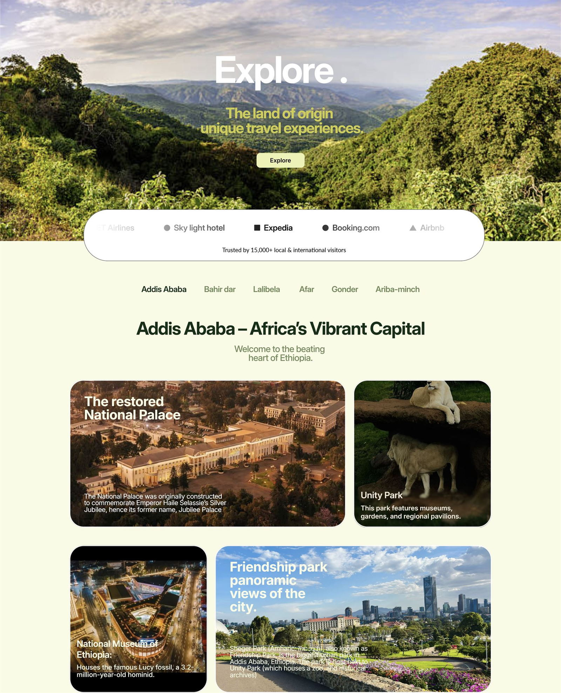
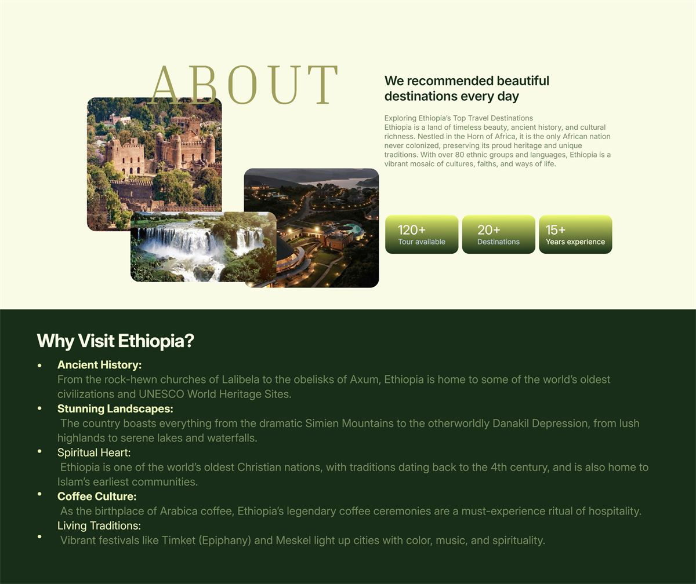
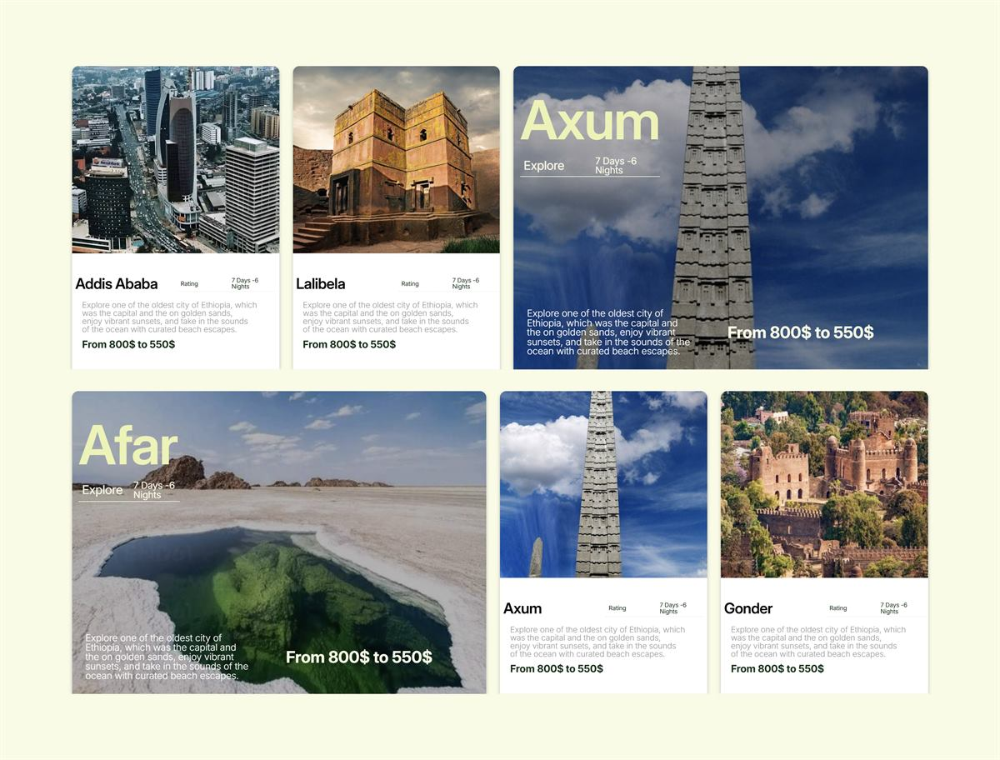
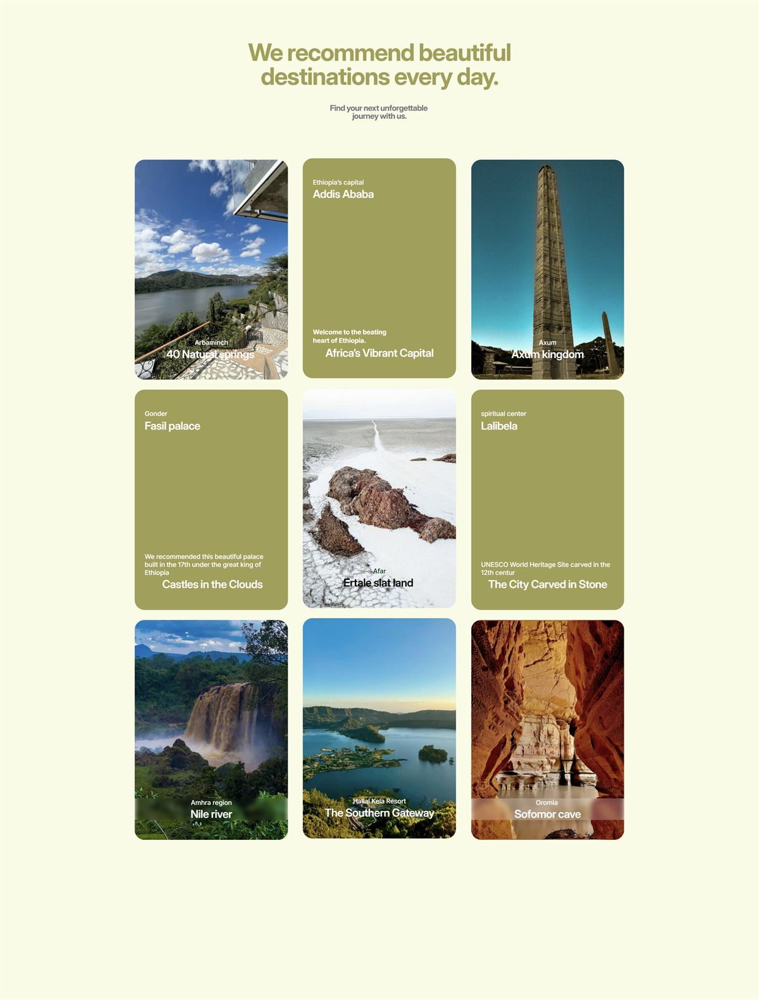
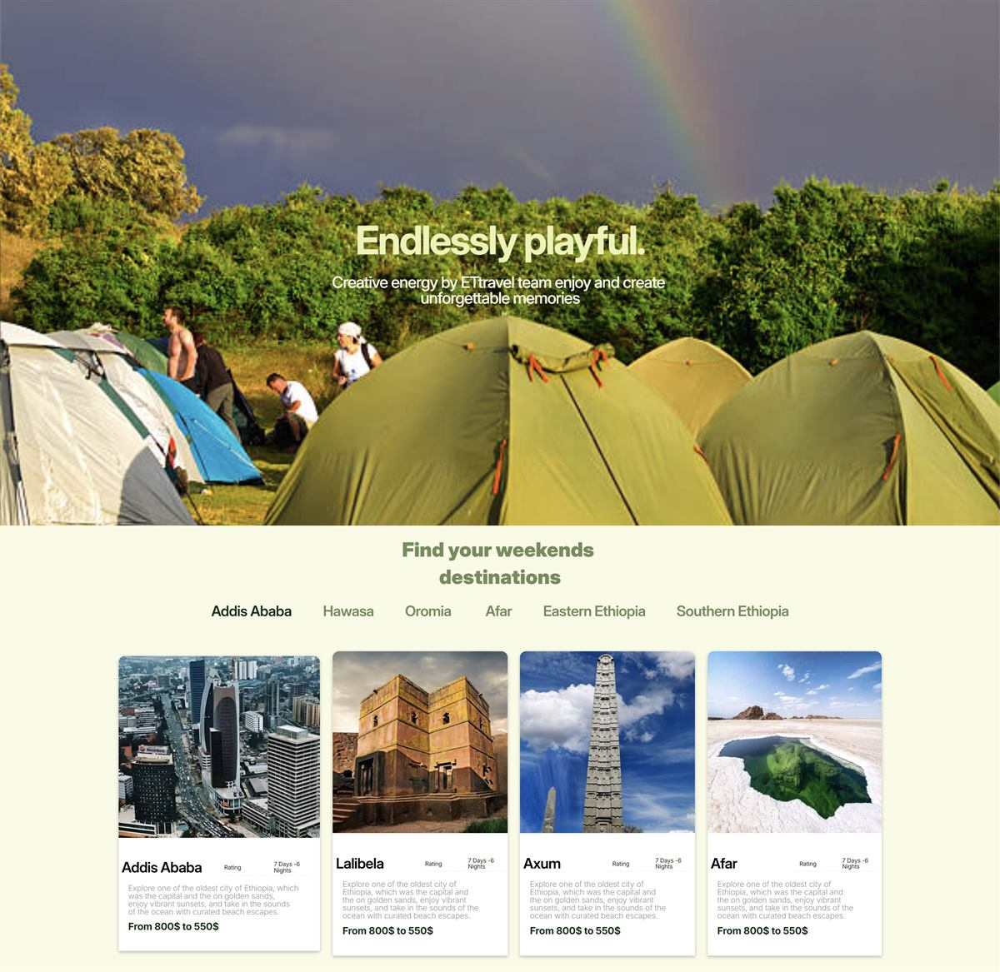
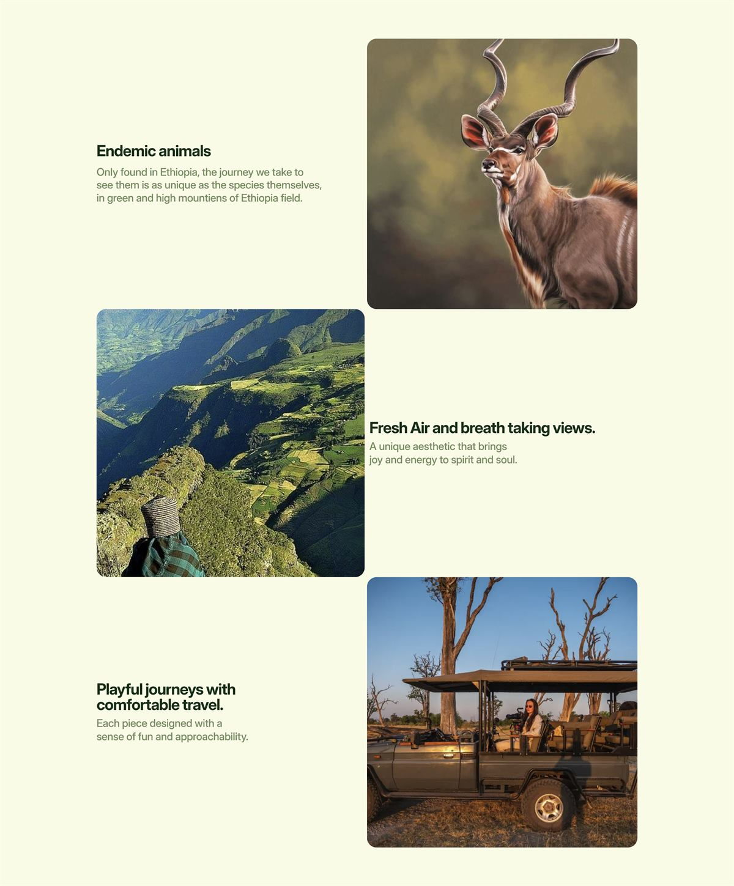

“More than a booking site — show the beauty of Ethiopia to global visitors, and let travelers plan real itineraries together with the agency’s staff.”
ETtravel Travel Agency
The challengeTravelers had to picture Ethiopia, compare regions, and start planning without getting lost in dense destination information.

From the first question to the finished system.
A six-page Framer site: a photography-led home, Explore and Destinations pages, a regional blog system, and itinerary booking handled with agency employees — all fully responsive.
The system behind the screen.
The work began by separating two visitor jobs: imagine a trip, then plan one. Destination stories lead with photography and concise context; regional navigation gives the growing catalogue a shape; itinerary requests bring the agency into the final planning step. That sequence keeps exploration open while making the next action clear.
The tensions to resolve
- Balancing aesthetic storytelling with functional booking tools.
- Keeping the site fast despite high-resolution destination photography.
- Designing a structure that could absorb blogs and itinerary planning without redesign.
Why the interface works this way.
Let the place lead
Large destination images set the emotional context before practical details arrive, so visitors can picture the trip they are weighing.
Give the catalogue a map
Grouping destinations by region gives travelers a useful first choice, then lets each place carry its own detail instead of competing in one long list.
Keep proof beside the decision
Partner references and destination detail support the booking invitation, giving visitors context before they contact the agency.
Make planning collaborative
The request path connects visitors with agency staff, who can turn an early idea into a practical itinerary.
What became easier.
The final site balances storytelling and function: visitors explore Ethiopia visually, learn the destinations, and book through the agency — a digital home with room to grow its content library.
8weeks from brief to launch
6pages plus a regional blog system
6destination regions structured
100%responsive, built in Framer





“His design transformed my travel agency business. He converted my ideas into a high-performing, visually striking website.”
Sarah YaredOwner, ETtravelExplore the real site.
Explore how the page structure, image hierarchy, navigation, and responsive decisions work together in the live build.
Keep exploring
Start with the thing that feels stuck.
Tell me who the experience is for, what is getting in their way, and what needs to become easier. I’ll reply within one working day with a useful next step and a written scope before work begins.
- yohannesassefa17@gmail.com
- +251 92 124 4796
- Addis Ababa, Ethiopia · GMT+3